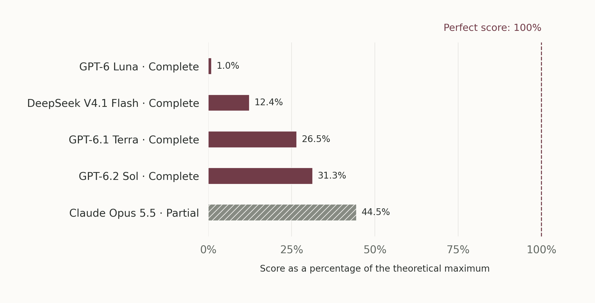
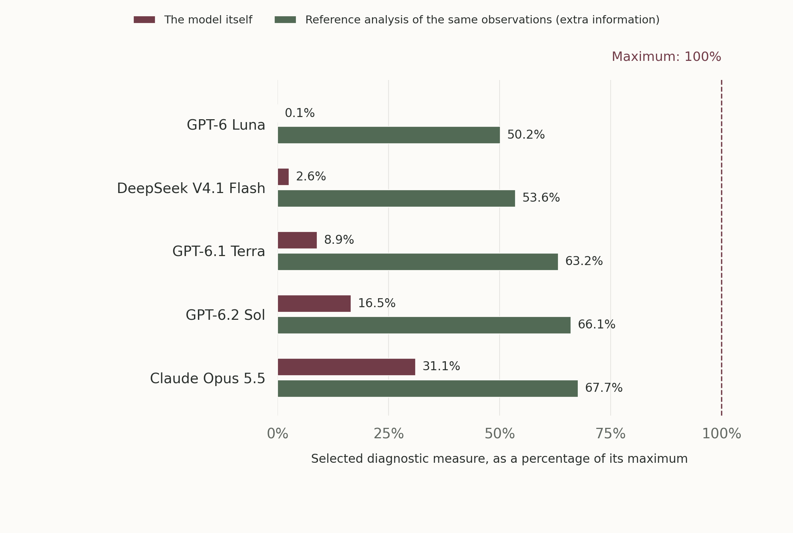
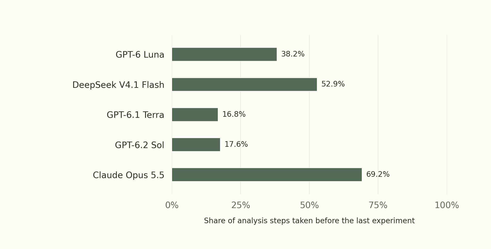

What should an agent learn from discovery?
I keep coming back to two questions. Can an agent work out something unfamiliar by choosing its own experiments? And when it encounters a new problem, does the earlier investigation make it a better learner?
OpenQFT grew out of wanting to study these questions together. A successful investigation is interesting in its own right. I am even more interested in what survives it: a useful idea, a better question, or a habit of checking an explanation before trusting it.
An intuition from the history of science
One inspiration is the history of particle physics. Observations arrived before a complete explanation. Researchers had to look for regularities, ask what those regularities implied, and decide which observation might change the picture. An explanation earned its value by helping them anticipate something they had not yet seen.
What interests me is this movement between evidence and explanation. Each discovery changes the questions that become worth asking. Experience can do more than supply another answer; it can change how the next investigation begins.
A snapshot across models
The snapshot now covers five models: GPT-6 Luna (gpt-6-luna), DeepSeek V4.1 Flash (deepseek-flash), GPT-6.1 Terra (gpt-6.1-terra), GPT-6.2 Sol (gpt-6.2-sol) and Claude Opus 5.5 (claude-opus-5-5). All scores are expressed as a percentage of the theoretical maximum: a perfect score is 100%.
The initial evaluation is twice as large as in the earlier version of this note, and every model was evaluated on the same set, so these numbers replace the earlier ones. Complete and Partial describe study coverage, not task success. The experience study is complete for the first four models. Claude Opus 5.5 has initial-evaluation results only.
The table separates initial evaluation from the experience comparison. They use different evaluation subsets, so a change between these columns should not be read as an improvement over time. The averages also hide how much single investigations by one model differ. Claude Opus 5.5 has the highest average here, yet its lead over GPT-6.2 Sol is within that spread, and its own investigations fall into two groups: some reach much of the explanation and some reach little. These are descriptive snapshots, rather than a definitive ranking.
| Model | Study coverage | Initial evaluation | Without experience | With experience |
|---|---|---|---|---|
GPT-6 Lunagpt-6-luna | Complete | 1.0% | 0.5% | 1.4% |
DeepSeek V4.1 Flashdeepseek-flash | Complete | 12.4% | 6.5% | 10.0% |
GPT-6.1 Terragpt-6.1-terra | Complete | 26.5% | 30.4% | 37.9% |
GPT-6.2 Solgpt-6.2-sol | Complete | 31.3% | 35.5% | 51.6% |
Claude Opus 5.5claude-opus-5-5 | Partial | 44.5% | Not available | Not available |

Collecting evidence is only part of the work
Choosing an experiment and making sense of its outcome are different abilities. An agent can collect observations while still missing a useful explanation. It can also settle on a plausible story too early and keep gathering evidence that fits it.
The comparison below places each model alongside a diagnostic reference analysis that works from that model's own observations. The reference also receives additional information, so the gap does not isolate a reasoning deficit. Still, the pattern is the same for all five models: the observations a model collected would have supported much more than the model concluded from them. It is a prompt to ask which parts of an investigation need help, rather than a claim that every answer was already available to the agent.

Models investigate in different ways
The models also differ in how they work, apart from how well they score. One difference is when the thinking happens. GPT-6.2 Sol and GPT-6.1 Terra tend to run their experiments in a few large batches and do most of their analysis after the last one, when nothing they work out can change what they try. Claude Opus 5.5 alternates: more than half of its analysis happens while it can still choose another experiment, and it varies the conditions of its experiments more widely.
The figure shows this as the share of analysis steps taken before the last experiment. A higher share is not a score: GPT-6 Luna and DeepSeek V4.1 Flash also analyse between experiments and score lowest, so alternating does not make an investigation succeed by itself. What I take from it is that the way an agent investigates can be measured alongside its result, and that an explanation worked out after the last experiment can no longer be tested by one.

When experience helps—and when it gets in the way
A later investigation need not begin from an empty page. In the comparison below, each model meets the same problems without and with notes from its own earlier investigations. The benefit grows with what a model can discover in the first place: GPT-6 Luna, which discovers little, gains little, and GPT-6.2 Sol gains the most.
What experience changes differs from model to model. With its notes, GPT-6.2 Sol runs different experiments: fewer of them, with the conditions varied more widely. GPT-6.1 Terra runs much the same experiments as before and changes what it concludes from them. In the cases I have so far, the notes also help with kinds of rule that the earlier investigations had not contained, which suggests that what carries over is mostly a way of working, more than a list of facts.
But useful memory needs judgement. A good explanation can guide a new experiment; an untested assumption can guide it in the wrong direction, and I see both. I want to understand how an agent can carry forward what it has learnt while staying willing to revise it. Claude Opus 5.5 has no experience comparison to show yet. These descriptive means do not imply that memory helps every investigation.

The question I want to keep asking
For me, the exciting possibility is an agent whose experience improves the way it investigates. It notices when an explanation stops working, asks a more revealing question, and brings a useful idea to an unfamiliar problem.
That connects scientific discovery to continual learning: progress in one investigation becomes part of how the next one is approached. OpenQFT is where I am exploring that connection.
A research note, while the work develops
This is an intuition-led preview of independent, unpublished research. Figures show selected descriptive means, with 100% marking the theoretical maximum for the measure in each figure. The diagnostic measure, the process measure and the overall evaluation score are different measures, and the process measure is not a score. Study coverage is marked explicitly. Experimental mechanisms and the full paper remain private while the work develops.
Updated November 2026